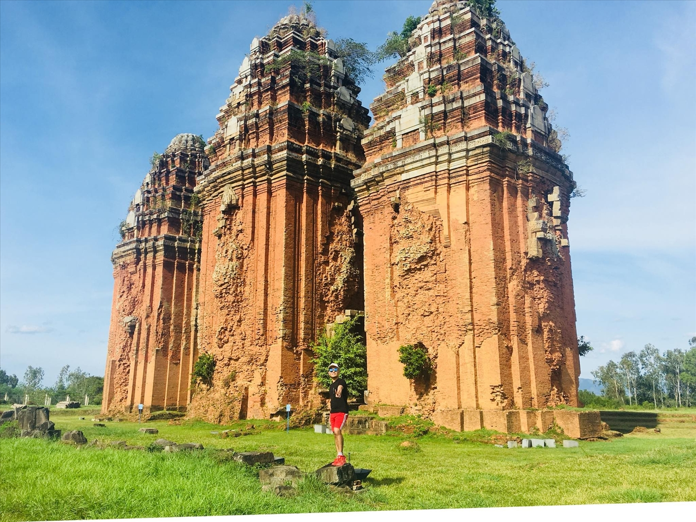

HELLO, IT'S NICE TO MEET YOU

Bình Định là tỉnh thuộc vùng Duyên hải Nam Trung bộ Việt Nam,nằm ở Trung tâm của trục Bắc - Nam (trên cả 4 tuyến Quốc lộ 1A, đường sắt xuyên Việt,
đường hàng không nội địa và đường biển), là cửa ngõ ra biển gần nhất và thuận lợi nhất của Tây Nguyên, Nam Lào,
Đông Bắc Campuchia và Thái Lan (bằng cảng biển quốc tế Quy Nhơn và Quốc lộ 19).
Bình Định còn là địa phương nổi tiếng với nghệ thuật hát Bội (Tuồng), bài Chòi độc đáo. Đặc biệt còn nổi tiếng là miền đất võ với những làng võ, lò võ vang danh khắp xứ.
Bình Định, nơi hội tụ và giao hòa văn hóa của nhiều dân tộc anh em nên các hình thức văn hóa dân gian và lễ hội
truyền thống cũng rất đa dạng và phong phú, là hình thức sinh hoạt văn hóa đặc sắc,
phản ánh đời sống tinh thần và tâm linh của các dân tộc như: lễ hội Đổ Giàn, lễ hội Cầu Ngư, lễ hội Đua thuyền, lễ hội chợ Gò…
Bình Định là một tỉnh duyên hải thuộc khu Nam Trung Bộ. Cũng như các tỉnh duyên hải khác, Bình Định được thiên nhiên ưu ái ban tặng cho một nguồn thủy
hải sản vô cùng đa dạng và phong phú. Điều này chính là yếu tố quan trọng tạo nên sự hấp dẫn của ẩm thực Bình Định. Các món ăn ngon của Bình Định phần nhiều được chế biến từ nguồn lợi thủy hải sản được nuôi trồng
và đánh bắt ngay tại vùng biển địa phương, nên nguyên liệu thường rất tươi ngon vì không phải trải qua quá trình cấp đông hay vận chuyển nhiều.
Một điểm hấp dẫn khác của món ăn Bình Định đó là mang nhiều sắc thái đặc trưng của món ăn miền
Trung với vị hơi cay nồng là chủ đạo. Tại Bình Định cũng có nhiều món ăn đặc sản của miền Trung điển hình là các loại bánh như bánh xèo, bánh ít lá gai,
bánh bột lọc… hay những loại nem, tré, gỏi…
Chỉ cần một lần đặt chân đến mảnh đất Bình Định, mọi du khách đều sẽ bị mê hoặc bởi thiên nhiên hùng vĩ, con người thân thiện và nhiều món ăn hấp dẫn.
Và điều mà nhiều du khách cảm thấy tò mò nhất chắc hẳn là đặc sản Bình Định phải không nào? Vậy vùng đất này có những món ăn nào hấp dẫn du khách đến như vậy!
Hãy để VN Foods giúp bạn hiểu hơn về văn hoá ẩm thực nơi đây nhé!